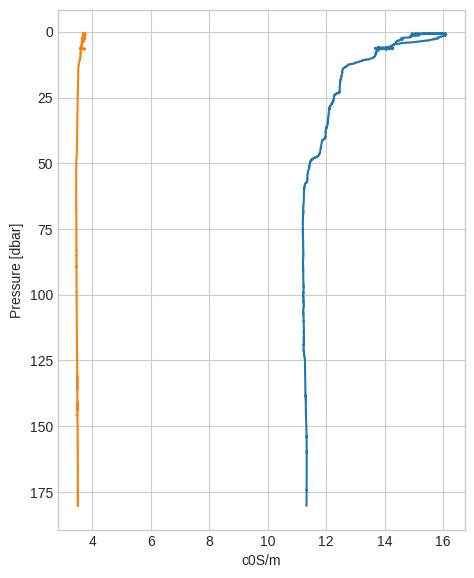
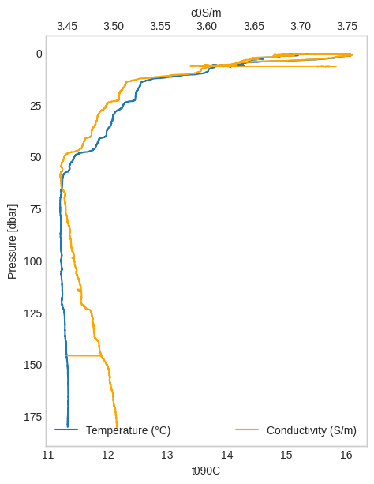
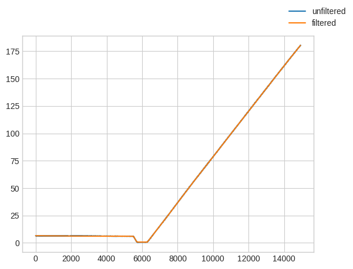
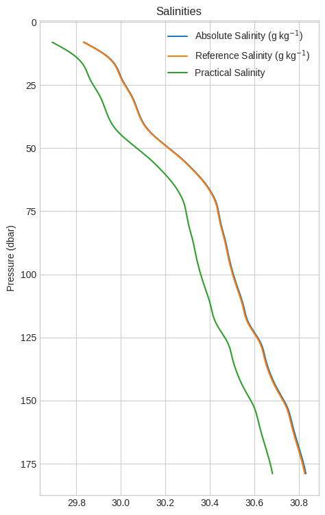
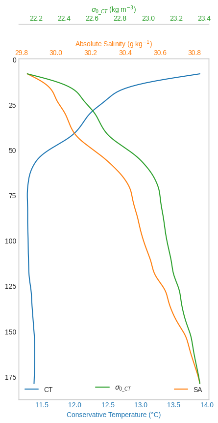

Quick introduction#
Reading and plotting#
import io
import requests
from pathlib import Path
def download_demo_file(url):
if not Path("CTD-spiked-unfiltered.cnv.bz2").exists():
response = requests.get(url, allow_redirects=True)
try:
response.raise_for_status()
except requests.exceptions.HTTPError as err:
raise requests.exceptions.HTTPError(f"{response.content.decode()}") from err
data = io.BytesIO(response.content)
data.seek(0)
Path("CTD-spiked-unfiltered.cnv.bz2").write_bytes(data.read())
url = "https://github.com/pyoceans/python-ctd/raw/main/tests/data/CTD-spiked-unfiltered.cnv.bz2"
# download_demo_file(url)
import ctd
# cast = ctd.from_cnv("CTD-spiked-unfiltered.cnv.bz2")
# cast = ctd.from_cnv("/home/mayorga/dinosip-python-cnvs/cruises_cnvs_2023/20230628P28C01.cnv")
cast = ctd.from_cnv("/home/mayorga/dinosip-python-cnvs/cruises_cnvs_2024/20240718_CTD05_p28.cnv")
down, up = cast.split()
down.head()
| t090C | sal00 | c0S/m | sbox0Mm/Kg | CStarTr0 | flECO-AFL | ph | par | flag | |
|---|---|---|---|---|---|---|---|---|---|
| Pressure [dbar] | |||||||||
| 6.543 | 14.0140 | 30.7695 | 3.737626 | 225.061 | 68.6557 | 6.8175 | 8.034 | 137.86 | False |
| 6.558 | 14.0138 | 30.7709 | 3.737760 | 224.907 | 68.9782 | 6.8175 | 8.029 | 137.86 | False |
| 6.543 | 14.0135 | 30.7719 | 3.737836 | 224.743 | 69.0319 | 6.8175 | 8.034 | 138.65 | False |
| 6.558 | 14.0134 | 30.7718 | 3.737811 | 224.720 | 69.0050 | 6.8175 | 8.034 | 139.04 | False |
| 6.543 | 14.0128 | 30.7725 | 3.737842 | 224.852 | 68.9782 | 6.8175 | 8.029 | 139.04 | False |
It is a pandas.DataFrame with all the pandas methods and properties.
type(cast)
pandas.core.frame.DataFrame
But with extras for pre-processing and plotting a ocean vertical profiles.
from matplotlib import style
style.use("seaborn-v0_8-whitegrid")
down["t090C"].plot_cast()
down["c0S/m"].plot_cast();

Sometimes it is useful to plot the second variable in a different axis so we can compare the two.
ax0 = down["t090C"].plot_cast(label="Temperature (°C)")
ax1 = down["c0S/m"].plot_cast(
ax=ax0,
label="Conductivity (S/m)",
color="orange",
secondary_y=True,
)
ax0.grid(False)
ax1.grid(False)
ax0.legend(loc="lower left")
ax1.legend(loc="lower right");

python-ctd saves of the file metadata in a dictionary to make them easy to access later.
metadata = cast._metadata
metadata.keys()
dict_keys(['name', 'header', 'config', 'names', 'skiprows', 'time', 'lon', 'lat'])
metadata['lat'], metadata['lon']
(47.71333333333333, -122.41933333333333)
print(metadata["header"])
* Sea-Bird SBE 9 Data File:
* FileName = C:\Data\RC0122ctd\20240718_CTD05_p28.hex
* Software Version Seasave V 7.26.7.107
* Temperature SN = 1121
* Conductivity SN = 2881
* Number of Bytes Per Scan = 31
* Number of Voltage Words = 4
* Number of Scans Averaged by the Deck Unit = 1
* System UpLoad Time = Jul 18 2024 08:54:01
* NMEA Latitude = 47 42.80 N
* NMEA Longitude = 122 25.16 W
* NMEA UTC (Time) = Jul 18 2024 15:54:00
* Store Lat/Lon Data = Append to Every Scan
* SBE 11plus V 5.2
* number of scans to average = 1
* pressure baud rate = 9600
* NMEA baud rate = 4800
* GPIB address = 1
* advance primary conductivity 0.073 seconds
* advance secondary conductivity 0.073 seconds
* delete word 3 from scan
* delete word 4 from scan
* autorun on power up is disabled
* S>
** Ship: R/V Rachel Carson
** Cruise ID: RC0121
** Tech: Jalickee
** Chief Scientist: Boyar
** Station: p28
** Cast: 05
* System UTC = Jul 18 2024 15:54:01
*END*
Pre-processing steps#
Usually the first pre-processing step is to filter the high frequency jitter in the pressure sensor with a low pass filter, here is a zoom in the pressure data (the pandas index) demonstrating it:
import matplotlib.pyplot as plt
fig, ax = plt.subplots()
ax.plot(down.index, label="unfiltered")
ax.plot(down.lp_filter().index, label="filtered")
# ax.axis([20870, 20930, 557.5, 559])
# ax.axis([20870, 20930, 557.5, 559])
fig.legend();

Thanks to pandas_flavor we can chain all the pre-processing steps together.
down = down[["t090C", "c0S/m"]]
proc = (
down.remove_above_water()
.remove_up_to(idx=7)
.despike(n1=2, n2=20, block=100)
.lp_filter()
.press_check()
.interpolate()
.bindata(delta=1, method="interpolate")
.smooth(window_len=21, window="hanning")
)
proc.head()
| t090C | c0S/m | |
|---|---|---|
| 8.0 | 13.784330 | 3.600170 |
| 9.0 | 13.606445 | 3.587466 |
| 10.0 | 13.431428 | 3.574971 |
| 11.0 | 13.264619 | 3.563063 |
| 12.0 | 13.110621 | 3.552074 |
CTD derive#
Now we can compute all the derived variables.
lon, lat = metadata["lon"], metadata["lat"]
lon, lat
(-122.41933333333333, 47.71333333333333)
import gsw
p = proc.index
SP = gsw.SP_from_C(proc["c0S/m"].to_numpy() * 10.0, proc["t090C"].to_numpy(), p)
SA = gsw.SA_from_SP(SP, p, lon, lat)
SR = gsw.SR_from_SP(SP)
CT = gsw.CT_from_t(SA, proc["t090C"].to_numpy(), p)
z = -gsw.z_from_p(p, lat)
sigma0_CT = gsw.sigma0(SA, CT)
proc = (
proc.assign(SP=SP)
.assign(SA=SA)
.assign(SR=SR)
.assign(CT=CT)
.assign(z=z)
.assign(sigma0_CT=sigma0_CT)
)
labels = [
r"Absolute Salinity (g kg$^{-1}$)",
r"Reference Salinity (g kg$^{-1}$)",
"Practical Salinity",
]
ax = proc[["SA", "SR", "SP"]].plot_cast(
figsize=(5.25, 9),
label=labels,
)
ax.set_ylabel("Pressure (dbar)")
ax.grid(True)
ax.legend()
ax.set_title("Salinities");

Last but not least let’s tweak a three line plot with the main variables measured.
def make_patch_spines_invisible(ax):
ax.set_frame_on(True)
ax.patch.set_visible(False)
for sp in ax.spines.values():
sp.set_visible(False)
fig, ax0 = plt.subplots(figsize=(5, 9))
colors = ["#1f77b4", "#ff7f0e", "#2ca02c"]
ax0.invert_yaxis()
ax1 = ax0.twiny()
ax2 = ax0.twiny()
(l0,) = ax0.plot(proc["CT"], proc.index, color=colors[0], label="CT")
ax0.set_xlabel("Conservative Temperature (°C)")
(l1,) = ax1.plot(proc["SA"], proc.index, color=colors[1], label="SA")
ax1.set_xlabel("Absolute Salinity (g kg$^{-1}$)")
(l2,) = ax2.plot(
proc["sigma0_CT"], proc.index, color=colors[2], label=r"$\sigma_{0\_CT}$"
)
ax2.set_xlabel(r"$\sigma_{0\_CT}$ (kg m$^{-3}$)")
make_patch_spines_invisible(ax2)
ax2.spines["top"].set_position(("axes", 1.1))
ax2.spines["top"].set_visible(True)
ax0.xaxis.label.set_color(l0.get_color())
ax1.xaxis.label.set_color(l1.get_color())
ax2.xaxis.label.set_color(l2.get_color())
ax0.tick_params(axis="x", colors=l0.get_color())
ax1.tick_params(axis="x", colors=l1.get_color())
ax2.tick_params(axis="x", colors=l2.get_color())
ax0.grid(False)
ax1.grid(False)
ax2.grid(False)
ax0.legend(loc="lower left")
ax1.legend(loc="lower right")
ax2.legend(loc="lower center");
